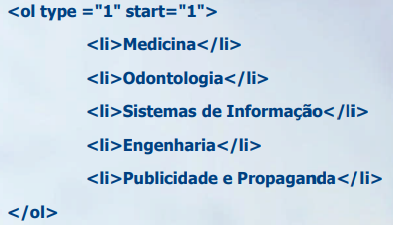
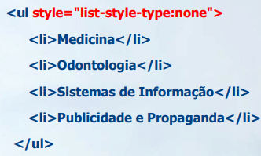
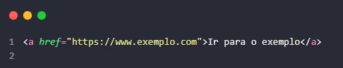

O client são todos os dispositivos que utilizamos no dia-dia, que fazem requisições para o servers.
O servidor é o computador (ou conjunto de computadores) robusto e especializado que armazena os recursos e aguarda os pedidos dos clientes para então fornecê-los (ou "servi-los").
Alan Turing
Considerado o "pai da ciência da computação". Formalizou os conceitos de "algoritmo" e "computação" com a Máquina de Turing, um modelo teórico de um computador universal. Seu trabalho durante a Segunda Guerra Mundial para decifrar o código Enigma foi crucial e demonstrou o poder da computação na prática, além de ter lançado as bases para a inteligência artificial.
Ada Lovelace
Reconhecida como a "primeira programadora" da história.No século XIX, muito antes de qualquer computador ser construído, ela escreveu o que é considerado o primeiro algoritmo destinado a ser processado por uma máquina — a "Máquina Analítica" de Charles Babbage. Ela entendeu que a máquina poderia ir além de meros cálculos e manipular símbolos.
Vint Cerf
Frequentemente chamado de um dos "pais da internet".Juntamente com Bob Kahn, ele co-desenvolveu o TCP/IP (Protocolo de Controle de Transmissão/Protocolo de Internet). Este é o conjunto de protocolos de comunicação fundamental que rege como os dados são divididos em pacotes e enviados através de redes. Essencialmente, é o "idioma" que permite que computadores diferentes se comuniquem para formar a internet.
Bob Kahn
O parceiro de Vint Cerf na criação do TCP/IP.Enquanto trabalhava na ARPA (Agência de Projetos de Pesquisa Avançada dos EUA), Kahn foi o arquiteto da rede ARPANET. Ele teve a ideia inicial do TCP/IP para permitir que redes diferentes e independentes pudessem se conectar sem perder dados, e recrutou Vint Cerf para ajudá-lo a resolver os detalhes.
Tim Berners-Lee
O inventor da World Wide Web (WWW).É importante não confundir a "internet" (a rede de computadores) com a "web" (a forma como acessamos informações nela). Em 1989, enquanto trabalhava no CERN, Berners-Lee inventou as três tecnologias fundamentais da web: HTML: A linguagem de marcação para criar páginas. URL: O sistema de endereços para encontrar as páginas. HTTP: O protocolo para "pedir" e "entregar" as páginas. Ele também criou o primeiro navegador e o primeiro servidor web. Crucialmente, ele disponibilizou sua invenção gratuitamente, sem patentes, permitindo que ela se tornasse o fenômeno global que é hoje.
Esses são alguns dos nomes dos grandes responsaveis pela internet e computação como conhecemos hoje.
Voltar inicioA estrutura do HTML é baseada em Tags, atraves delas, ele entende o que é um paragrafo ou um título.
Aqui vou listar algumas das Tags usadas nesse código e explicar brevemente qual sua utilidade.
p = paragrafo, com essa ele tag ele gera um paragrafo.
h = titulo, tem diferentes tipos de h(1,2,3,4,5,6) que definem sua importancia.
ul = Unordered, lista não ordenada.
ol = lista ordenada, essa em expecifico não utilizei durante o processo de desenvolvimento.
li = lista, cria um tópico dentro das listas ordenadas e não ordenadas.
ID - Define um identificador único para um elemento na página. É muito usado por CSS (para estilizar aquele elemento específico) e JavaScript (para "encontrar" e manipular o elemento).
CLASS - Define uma ou mais classes para um elemento. É a forma mais comum de agrupar elementos para aplicar estilos CSS. Vários elementos podem ter a mesma classe.
STYLE - Permite aplicar regras de CSS "inline" (diretamente no elemento). Geralmente é preferível usar class ou id e um arquivo CSS separado, mas o style é útil para testes rápidos.
TITLE - Fornece informações extras sobre o elemento. Na maioria dos navegadores, isso aparece como uma "dica" (tooltip) quando o usuário passa o mouse sobre o elemento.
LANG - Especifica o idioma do conteúdo do elemento. É importante para acessibilidade (leitores de tela) e SEO (mecanismos de busca).
Para criar uma lista ordenada/não ordenada é necessario duas Tags


Para adicionar links ao seu site tanto para conteudos externos ou internos você vai utilizar a Tag..
a = para ancorar
href = hypertext reference

Voltar inicio